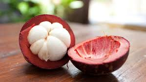

| Inicio | Pagina1 | Pagina2 | Pagina3 | Pagina4 |
|---|
| también conocido como el mangostán púrpura es una fruta tropical procedente de Asia, que ya desde la Antigüedad se utilizaba por sus diferentes propiedades curativas como tratamiento para la diarrea, la disentería, la inflamación, la úlcera y como poderoso cicatrizante |  |